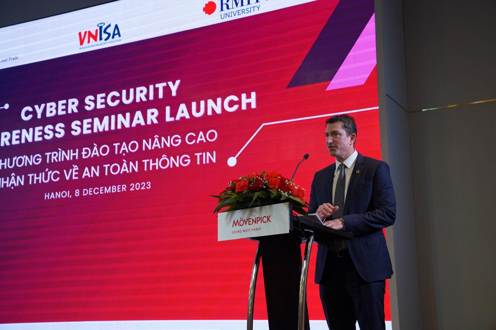
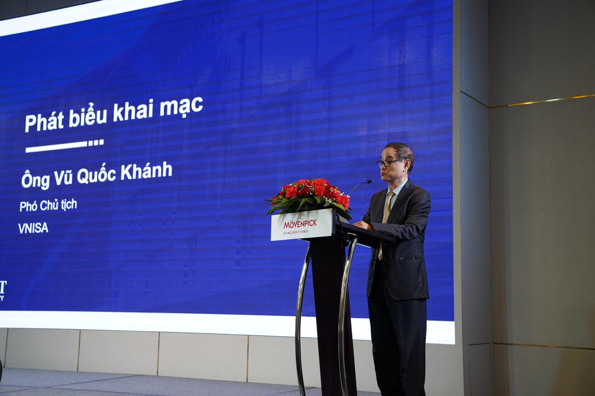
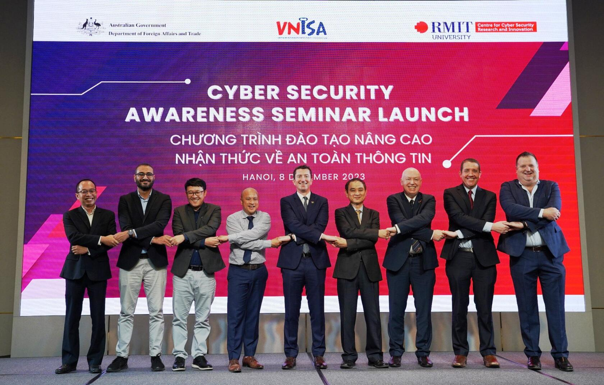
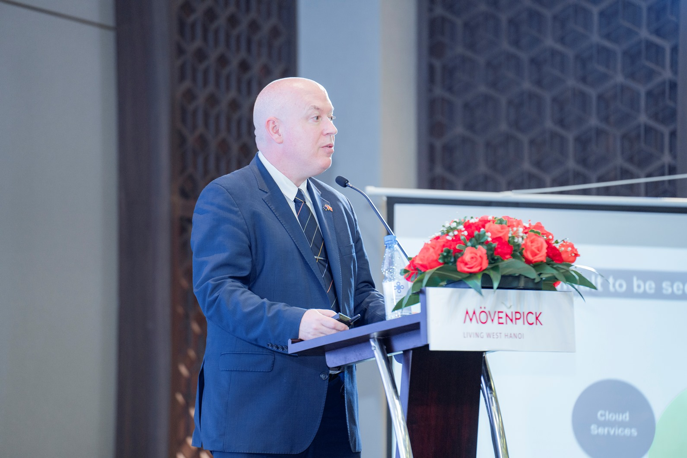
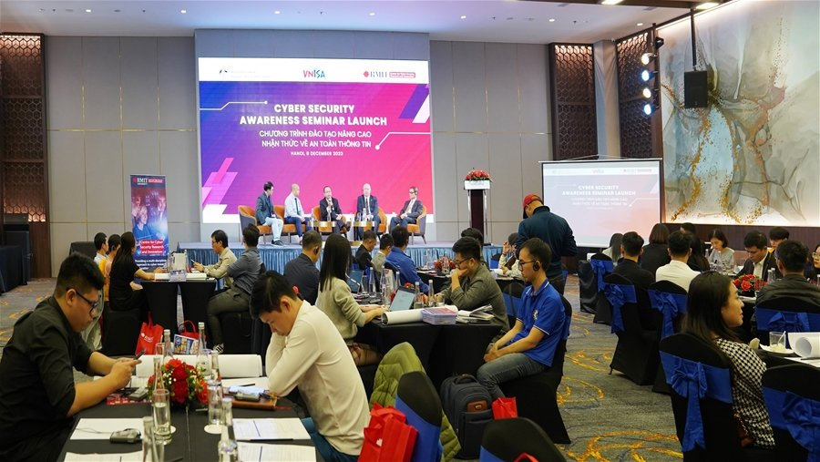

Sáng ngày 08/12, tại Hà Nội, Đại học RMIT (Australia) phối hợp với Hiệp hội An toàn thông tin Việt Nam (VNISA) tổ chức Chương trình đào tạo “Nâng cao nhận thức về An toàn thông tin” dành cho khoảng 50 cán bộ an toàn thông tin, công nghệ thông tin thuộc một số tổ chức, doanh nghiệp, Hội viên và đối tác VNISA, nhằm góp phần nâng cao chất lượng nguồn nhân lực an toàn thông tin.

Ông Mark Tattersall, Phó Đại sứ, Đại sứ quán Australia tại Việt Nam
Tham dự Lễ khai mạc lớp đào tạo có ông Mark Tattersall, Phó Đại sứ, Đại sứ quán Australia tại Việt Nam, Giáo sư Matthew Warren, Giám đốc Trung tâm Nghiên cứu và Đổi mới an ninh mạng Đại học RMIT (CCSRI), Phó giáo sư Phạm Công Hiệp, phụ trách Trung tâm Nghiên cứu và Đổi mới An ninh mạng của RMIT tại Việt Nam.
Về phía VNISA có TS Vũ Quốc Khánh, Phó chủ tịch Hiệp hội và một số cán bộ văn phòng Hiệp hội.
Phát biểu chào mừng, Phó Đại sứ Mark Tattersall đánh giá cao sự hợp tác giữa RMIT và VNISA trong chương trình trao đổi, hợp tác về an toàn thông tin tại Việt Nam, góp phần nâng cao nhận thức, kỹ năng sử dụng mạng an toàn của các cơ quan, tổ chức và cộng đồng tại Việt Nam.

Ông Vũ Quốc Khánh, Phó chủ tịch VNISA
Phát buổi khai mạc, Phó chủ tịch VNISA Vũ Quốc Khánh cảm ơn Đại sứ quán Australia tại Việt Nam và Đại học RMIT đã phối hợp và tạo điều kiện để các cán bộ từ các đơn vị Hội viên và đối tác của VNISA được giao lưu, học hỏi và chia sẻ kinh nghiệm cùng các chuyên gia an toàn, an ninh mạng Australisa. Đặc biệt, trong năm 2023, được sự hỗ trợ của Chính phủ Australisa và RMIT, VNISA đã tổ chức Đoàn công tác sang Australia để giao lưu, học hỏi cùng các chuyên gia của CCSRI, Hiệp hội An toàn thông tin Australia và tham dự sự kiện thường niên về an toàn, an ninh mạng lớn nhất tại Australia – Hội thảo An ninh mạng Australia 2023.

Các đại biểu dự lễ khai mạc, từ phải qua trái gồm: ông Laki Kondylas chuyên gia của CCSRI; ông Joel Marks, bí thư thứ nhất Đại sứ quán Australia; GS Matthew Warren, Giám đốc CCSRI; TS Vũ Quốc Khánh, Phó chủ tịch VNISA; ông Mark Tattersall, Phó Đại sứ, Đại sứ quán Australia; ông Richard Magalad, Giám đốc điều hành Công ty ITR Australia; PGS Hiệp phạm, phụ trách CCSRI tại Việt Nam; TS Shah Khalid Khan, Nghiên cứu sinh sau tiến sĩ của CCSRI; ông Ngũ Thái Ngọc Khiêm, PGĐ Dịch vụ Tư vấn CNTT, Công ty KPMG.

Giáo sư Matthew Warren, Giám đốc CCSRI
Tại buổi đào tạo, các học viên đã được nghe giáo sư Matthew Warren, Giám đốc CCSRI chia sẻ về các khái niệm và tầm quan trọng của an toàn thông tin, an toàn mạng và các mối đe dọa, lỗ hổng ATTT thường gặp ảnh hưởng đến các tổ chức/ doanh nghiệp Australia; các chiến lược thiết thực để bảo vệ tổ chức/ doanh nghiệp khỏi các mối đe dọa trên và thúc đẩy văn hóa, ý thức nâng cao bảo đảm ATTT cho các tổ chức/ doanh nghiệp.

Toàn cảnh hội nghị đào tạo
Các chuyên gia đã chia sẻ những vướng mắc trong việc bảo đảm an toàn thông tin nói chung và tuân thủ Nghị định 13 về bảo vệ dữ liệu cá nhân của các doanh nghiệp vừa và nhỏ tại Việt Nam, cũng như kinh nghiệm đã triển khai ở Australia, trong đó nhấn mạnh về mặt ý thức và trách nhiệm bảo vệ thông tin cá nhân.